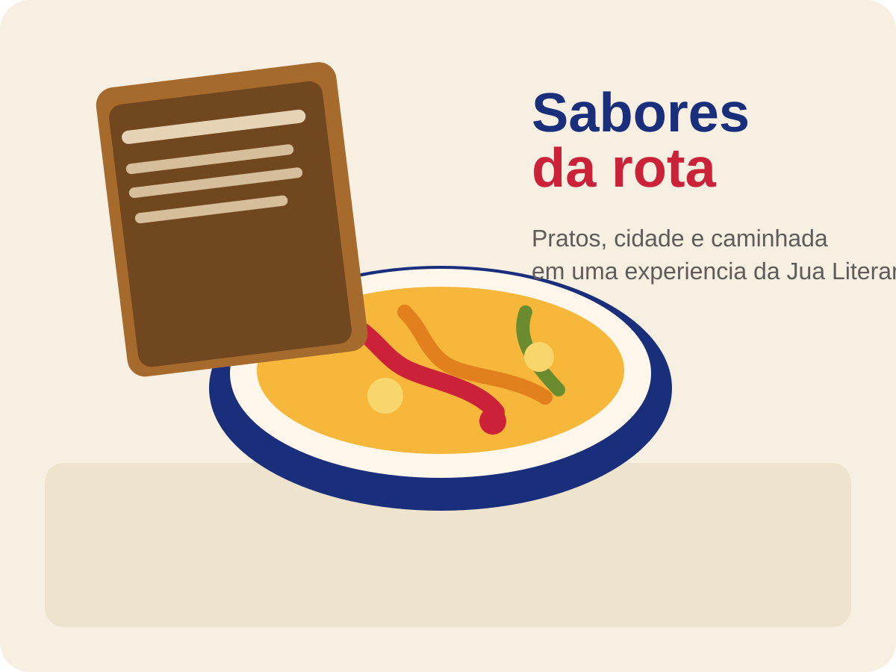

Acesse a rota
Explore o mapa digital e descubra os estabelecimentos participantes.
20 a 26 de julho
Caminhe pela orla, descubra estabelecimentos participantes e acompanhe sua jornada por sabores, encontros e experiências da cidade durante o festival.

A Rota Gastronômica Juá Literária 2026 convida o público a sair do evento e continuar a experiência pela cidade. Cada parada revela um novo sabor, um novo ambiente e mais um capítulo da semana na orla.
Durante a ação, os estabelecimentos participantes apresentam sua identidade, seus pratos e a chance de registrar visitas no passaporte digital da rota.
Explore o mapa digital e descubra os estabelecimentos participantes.
Conheça o prato especial e a história por trás de cada receita.
Vá ao local, deguste o prato e leia o QR Code no estabelecimento.
Registre sua experiência no passaporte digital e ganhe brindes.
Registre visitas por QR code, acompanhe quantos lugares você já conheceu e use o passaporte como guia para seguir explorando a rota durante toda a semana.
Abrir meu passaporte